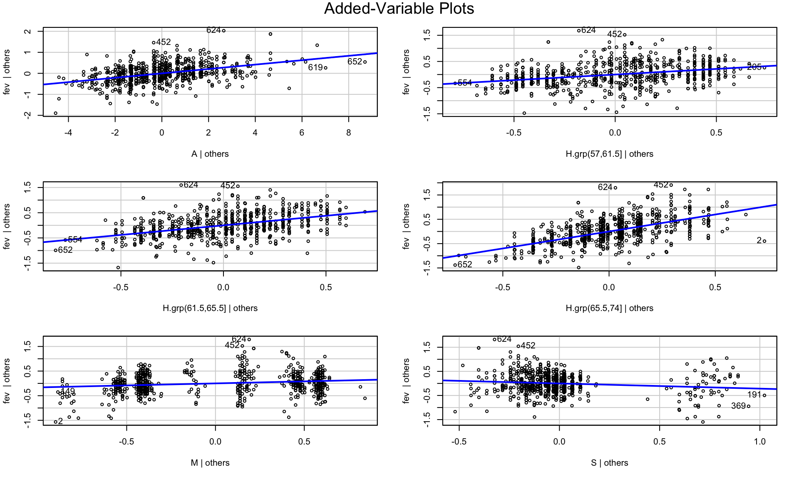
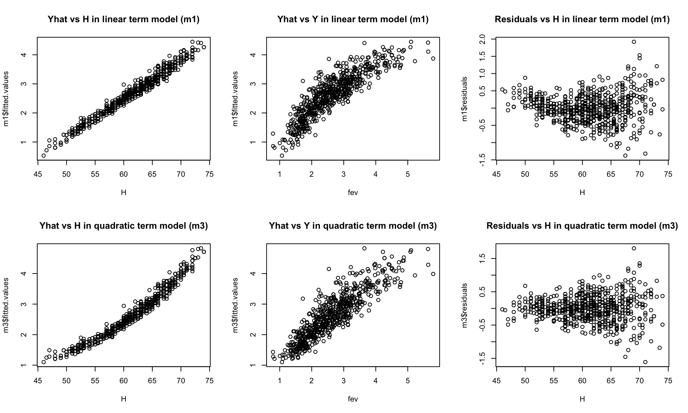

rm(list=ls())
data = read.csv(file="fev.csv",header=T)
attach(data)
head(data) id A H M S fev
1 1 9 57.0 0 0 1.708
2 2 8 67.5 0 0 1.724
3 3 7 54.5 0 0 1.720
4 4 9 53.0 1 0 1.558
5 5 9 57.0 1 0 1.895
6 6 8 61.0 0 0 2.336rm(list=ls())
data = read.csv(file="fev.csv",header=T)
attach(data)
head(data) id A H M S fev
1 1 9 57.0 0 0 1.708
2 2 8 67.5 0 0 1.724
3 3 7 54.5 0 0 1.720
4 4 9 53.0 1 0 1.558
5 5 9 57.0 1 0 1.895
6 6 8 61.0 0 0 2.336# psych::describe(data)
psych::pairs.panels(data)
m1 = lm(fev~A+H+M+S)
m1.yhat = m1$fitted.values
m1.res = m1$residuals #m1.yhat-fev
m1.h = hatvalues(m1) #leverage
m1.r = rstandard(m1) #internally studentized residuals
m1.rr = rstudent(m1) #externally studentized residualsHmisc::describe(m1.h)m1.h
n missing distinct Info Mean Gmd .05
654 0 376 1 0.007645 0.005121 0.003429
.10 .25 .50 .75 .90 .95
0.003566 0.004200 0.005476 0.008427 0.016909 0.019809
lowest : 0.00309803 0.00313824 0.00318313 0.00321591 0.00321696
highest: 0.0286109 0.0300659 0.0311761 0.0322516 0.0413994 m1.h[which.max(m1.h)] 652
0.04139937 Hmisc::describe(m1.res)m1.res
n missing distinct Info Mean Gmd .05
654 0 651 1 6.451e-18 0.4537 -0.655393
.10 .25 .50 .75 .90 .95
-0.510275 -0.250333 0.008938 0.255879 0.510772 0.665797
lowest : -1.37656 -1.32032 -1.17696 -1.13118 -1.07069
highest: 1.20594 1.21265 1.4438 1.53025 1.92047 Hmisc::describe(m1.res)$counts[c(".25",".50",".75")] .25 .50 .75
"-0.250333" " 0.008938" " 0.255879" hist(m1.res,breaks=15)
qq.m1.res = car::qqPlot(m1.res)
m1.res[qq.m1.res] 624 648
1.920471 1.530253 n = nrow(data); p = m1$rank # dimensions
m1.sigma = sqrt( sum(m1.res^2)/(n-p) )
m1.z = m1.res/m1.sigma #standardized residualm1.z.g1 = as.numeric(abs(m1.z)>1); mean(m1.z.g1)*100[1] 28.74618m1.z.g2 = as.numeric(abs(m1.z)>2); mean(m1.z.g2)*100[1] 4.587156m1.z.g2.5 = as.numeric(abs(m1.z)>2.5); mean(m1.z.g2.5)*100[1] 1.834862car::avPlots(m1)
#car::residualPlots(m1,type="response")H.grp = cut(H,breaks=quantile(H, probs=seq(0,1, by=0.25)),include.lowest=T)
m2 = lm(fev~A+H.grp+M+S)
summary(m2)
Call:
lm(formula = fev ~ A + H.grp + M + S)
Residuals:
Min 1Q Median 3Q Max
-1.4439 -0.2602 -0.0195 0.2677 1.7523
Coefficients:
Estimate Std. Error t value Pr(>|t|)
(Intercept) 0.909792 0.074444 12.221 < 2e-16 ***
A 0.104691 0.009246 11.323 < 2e-16 ***
H.grp(57,61.5] 0.428674 0.052747 8.127 2.24e-15 ***
H.grp(61.5,65.5] 0.761081 0.061952 12.285 < 2e-16 ***
H.grp(65.5,74] 1.396289 0.074665 18.701 < 2e-16 ***
M 0.164263 0.036378 4.515 7.51e-06 ***
S -0.216123 0.063307 -3.414 0.00068 ***
---
Signif. codes: 0 '***' 0.001 '**' 0.01 '*' 0.05 '.' 0.1 ' ' 1
Residual standard error: 0.4357 on 647 degrees of freedom
Multiple R-squared: 0.7498, Adjusted R-squared: 0.7475
F-statistic: 323.1 on 6 and 647 DF, p-value: < 2.2e-16car::avPlots(m2)
#car::residualPlots(m2,type="response")H.c = H-median(H,na.rm=T)
m3 = lm(fev~A+H.c+I(H.c^2)+M+S)
summary(m3)
Call:
lm(formula = fev ~ A + H.c + I(H.c^2) + M + S)
Residuals:
Min 1Q Median 3Q Max
-1.61190 -0.22716 0.00619 0.22418 1.80565
Coefficients:
Estimate Std. Error t value Pr(>|t|)
(Intercept) 1.8489438 0.0959542 19.269 < 2e-16 ***
A 0.0694646 0.0091089 7.626 8.66e-14 ***
H.c 0.1101485 0.0046258 23.812 < 2e-16 ***
I(H.c^2) 0.0031251 0.0004086 7.649 7.35e-14 ***
M 0.0945352 0.0328613 2.877 0.00415 **
S -0.1332112 0.0571079 -2.333 0.01997 *
---
Signif. codes: 0 '***' 0.001 '**' 0.01 '*' 0.05 '.' 0.1 ' ' 1
Residual standard error: 0.3951 on 648 degrees of freedom
Multiple R-squared: 0.794, Adjusted R-squared: 0.7924
F-statistic: 499.4 on 5 and 648 DF, p-value: < 2.2e-16par(mfrow=c(2,3))
plot(x=H,y=m1$fitted.values,main="Yhat vs H in linear term model (m1)")
plot(x=fev,y=m1$fitted.values,main="Yhat vs Y in linear term model (m1)")
plot(x=H,y=m1$residuals,main="Residuals vs H in linear term model (m1)")
plot(x=H,y=m3$fitted.values,main="Yhat vs H in quadratic term model (m3)")
plot(x=fev,y=m3$fitted.values,main="Yhat vs Y in quadratic term model (m3)")
plot(x=H,y=m3$residuals,main="Residuals vs H in quadratic term model (m3)")
dev.off()::: {.cell-output-display} 
:::